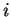

Next: Removing low ranking matches
Up: How it works
Previous: Step 1: From markers
Contents
Step 2: From features to grid
In order to identify segmental homologies, FISH computes a grid for each pair of
contigs. Points in the grid represent matches
between pairs of features. The  and  coordinates of a point are taken to be the
positions of the features within their respective contigs.
Each position in the grid, whether or not a point is present, is called as a
cell.
coordinates of a point are taken to be the
positions of the features within their respective contigs.
Each position in the grid, whether or not a point is present, is called as a
cell.
Subsections
root
2003-06-27